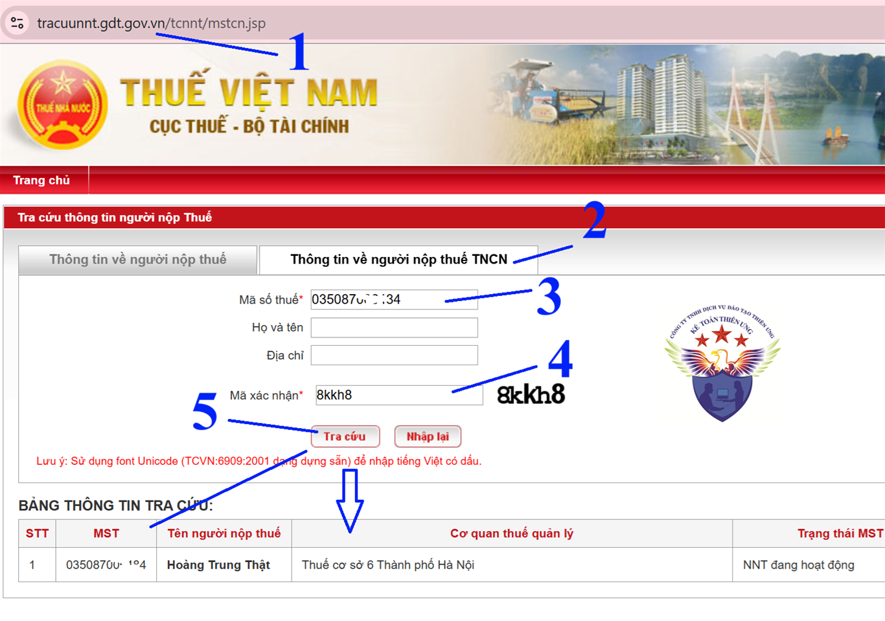
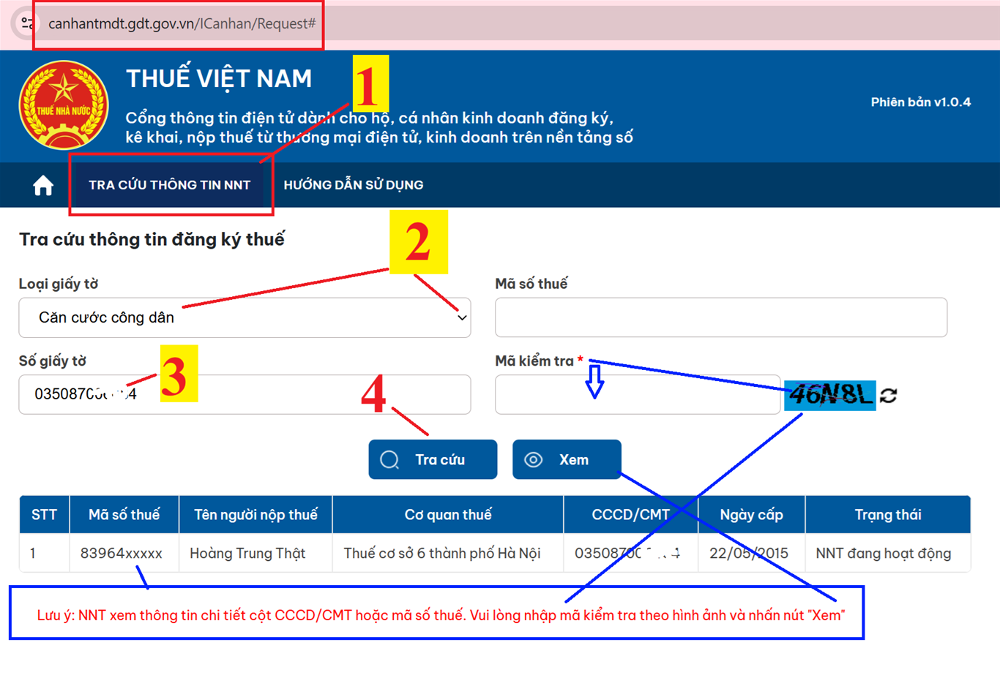

Hướng dẫn cách tra cứu mã số thuế thu nhập cá nhân trên hệ thống thuế điện tử mới nhất hiện nay
+ Trước ngày 01/07/2025: Mã số thuế TNCN sẽ có định dạng là 10 số
+ Còn từ ngày 01/7/2025, số định danh cá nhân cấp theo Luật Căn cước sẽ sử dụng thay cho mã số thuế của cá nhân là người Việt Nam, đồng thời, số định danh cá nhân của người đại diện hộ gia đình, đại diện hộ kinh doanh, cá nhân kinh doanh cũng được sử dụng thay cho mã số thuế của hộ gia đình, hộ kinh doanh, cá nhân kinh doanh đó.
Các bạn muốn tra cứu xem: cá nhân (người lao động) đó đã đăng ký thuế hay chưa? đã có MST TNCN hay chưa? MST TNCN là số nào? thì có thể thực hiện tra cứ tại các trang web sau:
+ Tra cứu MST TNCN, thông tin người nộp thuế TNCN trên trang https://tracuunnt.gdt.gov.vn/ của Tổng Cục Thuế
Trang này dùng số định danh (CCCD 12 số) hoặc mã số thuế 10 số để tra cứu ra MST hiện tại đang sử dụng từ ngày 01/07/2025 trở đi
+ Tra cứu MST TNCN, thông tin người nộp thuế TNCN trên trang https://canhantmdt.gdt.gov.vn/ của Thuế Việt Nam
Trang này dùng CCCD 12 số hoặc chứng minh thư để tra cứu ra mã số thuế 10 số đã được cấp và sử dụng trước ngày 01/07/2025
Chi tiết cách tra cứu trên từng trang như sau:
1. Tra cứu MST TNCN theo số định danh CCCD 12 số
Tra cứu MST TNCN, thông tin người nộp thuế TNCN trên trang https://tracuunnt.gdt.gov.vn/ của Tổng Cục Thuế
Bước 1: Truy cập vào trang web: https://tracuunnt.gdt.gov.vn/tcnnt/mstcn.jsp

Bước 2: Bấm vào tab "Thông tin về người nộp thuế TNCN"
Bước 3: Nhập thông tin dùng để tra cứu:
Trường hợp 1: Dùng mã số thuế thu nhập cá nhân 10 số để tra cứu thông tin của cá nhân đó:
Thì các bạn làm lần lượt như sau:
(1) Nhập MST 10 số của người muốn tra cứu vào dòng "Mã số thuế"
(2) Nhập mã xác nhận
(3) Bấm vào nút "Tra cứu"
(1) Nhập MST 10 số của người muốn tra cứu vào dòng "Mã số thuế"
(2) Nhập mã xác nhận
(3) Bấm vào nút "Tra cứu"
Trường hợp 2: Dùng số định danh cá nhân (căn cước công dân 12 số) để tra cứu mã số thuế:
Thì các bạn làm lần lượt như sau:
(1) Nhập số căn cước công dân 12 số
(2) Nhập mã xác nhận
(3) Bấm vào nút "Tra cứu"
(1) Nhập số căn cước công dân 12 số
(2) Nhập mã xác nhận
(3) Bấm vào nút "Tra cứu"
Bước 3: Xem kết quả tra cứu:
Sau khi các bạn bấm vào tra cứu thì hệ thống sẽ hiện thị ra bảng thông tin tra cứu
Lưu ý: Trường hợp "Không tìm thấy kết quả"
=> Trường hợp sau khi các bạn bấm vào Tra cứu mà Bảng thông tin tra cứu ra là "Không tìm thấy kết quả"
Thì các bạn xử lý như sau: Kiểm tra xem bạn nhập đúng thông tin của MST hay số căn cước hay mã xác nhận hay chưa
Trường hợp đã nhập đúng số căn cước công dân rồi mà ra thông tin "Không tìm thấy kết quả" thì chứng tỏ người này CHƯA CÓ MÃ SỐ THUẾ TNCN => Cần phải được đăng ký MST TNCN
2. Tra cứu MST TNCN 10 số theo số định danh CCCD hoặc chứng minh thư
Tra cứu MST TNCN, thông tin người nộp thuế TNCN trên trang https://canhantmdt.gdt.gov.vn/ của Thuế Việt Nam
Tại trang web này bạn có thể tra cứu MST TNCN 10 số bằng chứng minh thư hoặc căn cước công dân
Truy cập vào trang web: https://canhantmdt.gdt.gov.vn/ rồi thực hiện lần lượt các bước như sau:

Tại bước số 2: các bạn tích vào mũi để để chọn loại giấy tờ để tra cứu là Căn cước công dân hoặc Chứng Minh Thư
Công Ty Đào Tạo Kế Toán Diệu Tâm
xin chúc các bạn tra cứu mã số thuế thu nhập cá nhân thành công
xin chúc các bạn tra cứu mã số thuế thu nhập cá nhân thành công